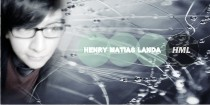

Sobre Henry Matias Landa
Henry Matias Landa, consultant en temas de Gestión Empresarial.
Profesional con varios años de experiencia en temas de gestión y soluciones de inteligencia analítica (clientes, productos, campañas) estudios en Administración de Empresas, Master and MBA (full open classes). Asesoría y capacitación en proyectos de Customer Experience, gestión de clientes y desarrollo comercial. Charlas y conferencias sobre innovación y desarrollo empresarial.

Incremento del valor empresarial mediante herramientas actuales como Branded Content, Innovation Engine, Design Thinking, Customer Experience, Lean Startup, Storytelling, y más.
EXPERIENCIA
Business Development Manager - Aquahem
Producción, distribución, proyección de inteligencia analítica, y desarrollo de nuevos clientes para la startup
Marketing Consultant - Saraja Producciones
Estrategias comerciales basadas en customer experience
Programas de mejora y control continuo de campañas comerciales, estrategias de marketing, social media, e-business.
Administrative Assistant, Production Leader - Pacifico Radio
Mejoras en las áreas de producción operativa, incremento de la interconexión del personal, procesos de mejora continua en el servicio al cliente en el sector comunicaciones.
Management Consultant - Sociedad Libre de Empresas Cristianas
Responsable en la soluciones de Marketing estratégico, desarrollo de customer experience. He liderado proyectos de consultoría estratégica y analítica, principalmente en la gestión de clientes y desarrollo comercial a Empresas que estaban vinculadas con esta Sociedad libre.
Desarrollo de estrategias comerciales basadas en el conocimiento del cliente, considerando sus oportunidades y amenazas, desarrollo de branded content, consumer insight, customer experience
Sistemas de recomendación comercial personalizada a clientes, basada en modelos de cross selling, upselling y gestión del churn.
Sistemas de experimentación, mejora y control continuo de campañas comerciales.
Identificación del precio óptimo de los productos en función de las características, a su vez la integración en la estrategia comercial.
Metodologías para cierta área o sector determinado para el desarrollo de design thinking, cloud computing, kaos pilot, Omnicanalidad.
Administrative Manager - Maxima FM Radio
Encargado de realizar todas las tareas administrativas relacionadas con la parte comercial, producción, monitoreo y emisión destinadas a obtener mejoras continuas en crecimiento de clientes y usuarios.
Sales Manager - Máxima Publicidad
Desarrollador de actividades de marketing y estrategia comercial, design thinking, innovación, formulación de actividades de incremento de ventas para Empresas del Sector, en base a customer designer, encargado de diseño de infografías
Production Manager - Zona Zero Radio
Gestión integral de la producción de Emisión, encargado de llevar a cabo todo el proceso de producción, control, ejecución, monitoreo y difusión en medio de comunicación.
Coordinador Comercial - Radio Laser
Gestión integral y planificación de crecimiento de clientes, con una metodología orientada a objetivos y resultados. Encargado de la producción comercial de la cartera de clientes y la mejora continúa de los servicios de la Empresa.
Sales Manager - Cinetica Radio
Responsable en los planes y proyectos de venta y ampliación de cartera de clientes. Incluye la gestión del programa de fuerza de ventas, de campañas de vinculación y la optimización de beneficios y estrategia de fidelización.
Administrative Coordinator - Radio Esperanza
Responsable de los proyectos de Analitycs, centrados en inteligencia de negocios. Implementación de estrategias de Marketing, a cargo de procesos para un mejor servicio al cliente, implementación de estrategias comerciales, administración y gestión de crecimiento.
Referencias
 Libros (Entra Aquí)Encuentra todas nuestras publicaciones y formas de adquirir nuestros lirbros de manera sencilla, que le serviran como guía útil para su mejora profesional.
Libros (Entra Aquí)Encuentra todas nuestras publicaciones y formas de adquirir nuestros lirbros de manera sencilla, que le serviran como guía útil para su mejora profesional. Contactos y Asesoría
Los ayudamos a descubrir una forma diferente de hacer las cosas mediante capacitaciones, conferencias o consultas empresariales, nos contactaremos con usted.
Contactos y Asesoría
Los ayudamos a descubrir una forma diferente de hacer las cosas mediante capacitaciones, conferencias o consultas empresariales, nos contactaremos con usted.  Vida PersonalConoce y descubre mucho más de la vida personal de Henry Matias, su pasión, su dirección, su fé, te ayudaremos a conocer el camino correcto que debes seguir.
Vida PersonalConoce y descubre mucho más de la vida personal de Henry Matias, su pasión, su dirección, su fé, te ayudaremos a conocer el camino correcto que debes seguir. 


Reflexión
"Hágase una reputación de genio creativo, despues rodéese de gente que sea mejor que usted, en tercer lugar, deje que ellos se pongan manos a la obra..."
David Ogilvy - Businessman